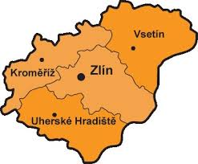
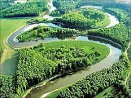
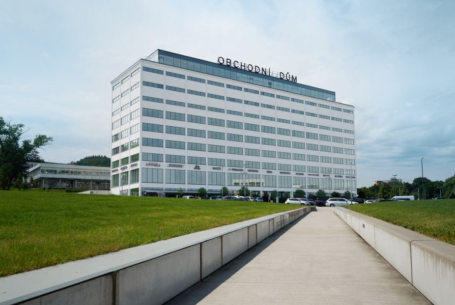
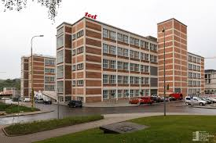
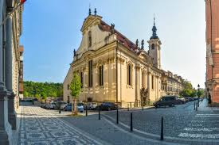
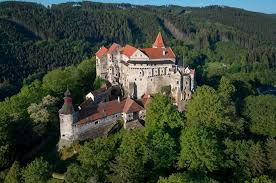
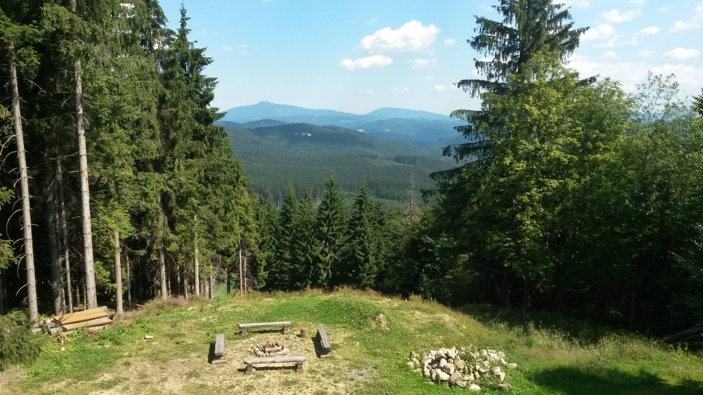

Školní Prezentace - Region Moravy
Jáchym Sulovský P2D

Umístění: Jihovýchodní Morava, Česká republika. Sousedí s Olomouckým a Moravskoslezským krajem. Leží v povodí řeky Moravy.
Rozloha: 3 640 km² | Obyvatel: cca 580 000 | Hlavní město: Zlín
Město bylo založeno již ve 12. století, ale velký rozvoj přišel s příchodem Tomáše Baťy v roce 1894. Zlín se z malého městyse proměnil na průmyslové centrum.
Baťa vytvořil moderní továrenní komplex, sociální program pro pracovníky a revoluční architekturu. Zlín se stal vzorem průmyslového a funkčního města.
Charakteristická moderní architektura z 20. a 30. let. Baťův obchodní dům, tovární haly a bytové domy jsou dodnes symbolem města.
V regionu sídlí Univerzita Tomáše Bati, střední odborné školy i učiliště. Mnoho studentů sem dojíždí za technikou, přírodovědou a designem.
Tradiční průmysl - dědictví Baťovy éry. Dnes se zaměřuje na kvalitní výrobu a export. Firma Baťa pokračuje v tradici.
Výroba průmyslových strojů, výrobních linek a technologií. Zaměřuje se na automobilový průmysl a inženýrství.
Chemické provozy, farmaceutické výroby. Kvalifikovaní pracovníci zajišťují produkci léků a chemikálií.
Pěstování obilí, cukrové řepy, brambor. Zemědělství zůstává tradiční součástí ekonomiky regionu.
Distribuční centra, sklady, doprava. Významný sektor kvůli poloze regionu na komunikačních trasách.
Turismus, ubytování, gastronomie. Rozvoj cestovního ruchu kvůli přírodě a historickým místům.






Zlínský kraj leží na důležitých trasách mezi Brnem, Ostravou a Slovenskem. Dálnice D1 je nejbližší velká tepna, region také propojují rychlostní komunikace R49 a R55.
Region je obsluhován železničními tratěmi směřujícími do Zlína, Vsetína i Přerova. Vlaky spojují města i menší obce po celé Moravě.
Ve Zlíně je Univerzita Tomáše Bati a několik středních škol. Místní studenti studují techniku, ekonomii nebo design.
Ve městě jsou kavárny, sportoviště a kulturní akce. Pro studenty jsou důležité i školní projekty a exkurze v průmyslu.
V regionu se konají hudební a filmové festivaly, trhy i poutě. Zlínský filmový festival je pro mladé lidi známý a oblíbený.
Volný čas se tráví v přírodě na cyklostezkách, turistice nebo v zimě na běžkách v Beskydech. Sportovní kluby podporují mladé talenty.
Zlínský kraj je bohatým regionem s dlouhou historií, tradičním průmyslem a moderními technologiemi.
Má velké kulturní dědictví a krásnou přírodu - Beskydy a řeky. Je vhodný zejména pro studium průmyslového rozvoje, přírodních věd a designu.
Prezentaci připravil Jáchym Sulovský P2D.
Pokud máte otázky, rád na ně odpovím.